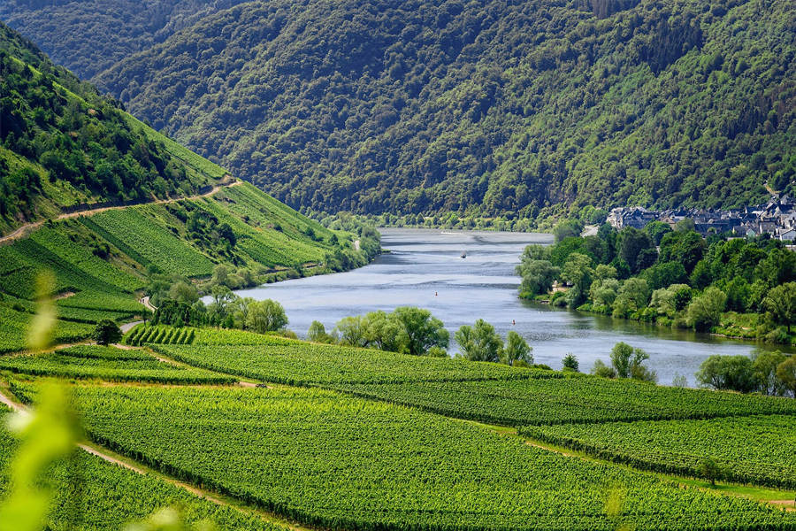

La Provence est la plus ancienne région viticole de France, la vigne y ayant été introduite dès 600 av. J.-C. par les Phocéens. Aujourd'hui, elle est la première productrice de rosé AOP, avec 134 millions de bouteilles en 2024 et 91 % des parcelles dédiées à ce style. À l'inverse, les rouges représentent 9 % de la production, ce qui renforce l'attrait de certains crus d'exception, comme ceux de Bandol ou des Baux-de-Provence. Dans les Alpilles, trois identités viticoles se distinguent. L'AOP Les Baux-de-Provence (277 ha) produit des rouges et rosés intenses, portés par le calcaire, le mistral et les cépages Grenache, Syrah et Mourvèdre. L'IGP Alpilles, plus libre dans ses assemblages, accueille des cuvées atypiques comme le rouge du Domaine de Trévallon, alliance emblématique de Cabernet-Sauvignon et Syrah. L'AOP Coteaux d'Aix-en-Provence (4 300 ha, 50 communes) donne naissance à des rosés vifs, des rouges équilibrés et quelques blancs expressifs à base de Rolle. Plus de 80 % des vignes y sont conduites en bio ou haute valeur environnementale.
Vigneron en IGP Alpilles, René Milan cultive ses vignes en biodynamie au Domaine de Fontchêne : « Écouter le végétal et observer l'importance du vivant.» Dans une région où l'AOP Les Baux-de- Provence est entièrement passée en bio, il pousse la démarche plus loin en suivant les cycles lunaires et en favorisant l'équilibre naturel. Une sélection de ses cuvées sera proposée à la dégustation, avec possibilité d'échange sur place.
Du Rhône méridional à la Provence et Bandol, le sud-est de la France signe des vins magnifiques : expressifs, profondément ancrés dans leurs terroirs et avec une grande capacité de garde. Si je devais en citer quelques-uns :
Pour ceux qui ne connaissent pas, je recommande d'essayer le manga « Les Gouttes de Dieu » qui cherche à traduire chaque vin par une émotion, on retrouve plus 500 vins au total. En regardant la liste des vins sélectionnée par Antoine pour notre offsite, un domaine de la région est justement illustré dans le manga par la chaleur simple d'un moment partagé — parfait pour notre offsite !